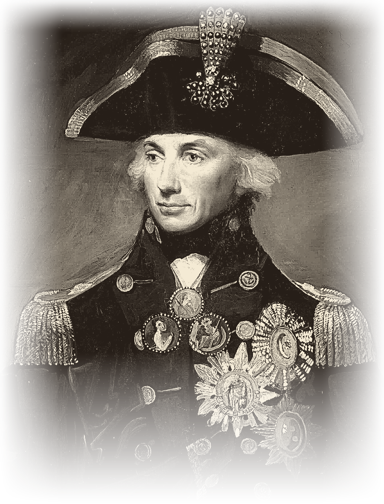

1Horatio Nelson was a famous British naval officer who lived from 1758 to 1805. He was born on 29 September 1758 in a small village called Burnham Thorpe in England.
2Nelson joined the Royal Navy when he was only 12 years old. He loved the sea and wanted to become a brave and successful sailor. Nelson was not very tall, but he was a strong leader with great courage.
3During his career, he fought in many important battles at sea. He lost the sight in his right eye during a battle in 1794. In 1797, he lost his right arm during the Battle of Santa Cruz de Tenerife. Even after these injuries, Nelson returned to the sea and continued his career. He became famous for his clever plans and unusual ideas in naval battles.
4One of his greatest victories came at the Battle of the Nile in 1798. In this battle, Nelson defeated a large French fleet in Egypt. His most famous battle was the Battle of Trafalgar on 21 October 1805. Nelson led the British fleet against the French and Spanish fleets near the coast of Spain. The British won the battle, but Nelson was badly wounded by an enemy bullet. He died on his ship, HMS Victory, on the same day at the age of 47.
5Nelson became a national hero, and people still remember him for his courage and leadership. Today, Nelson’s Column in Trafalgar Square, London, is a famous monument to this remarkable sailor.